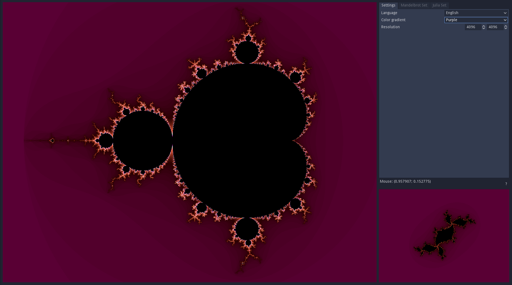
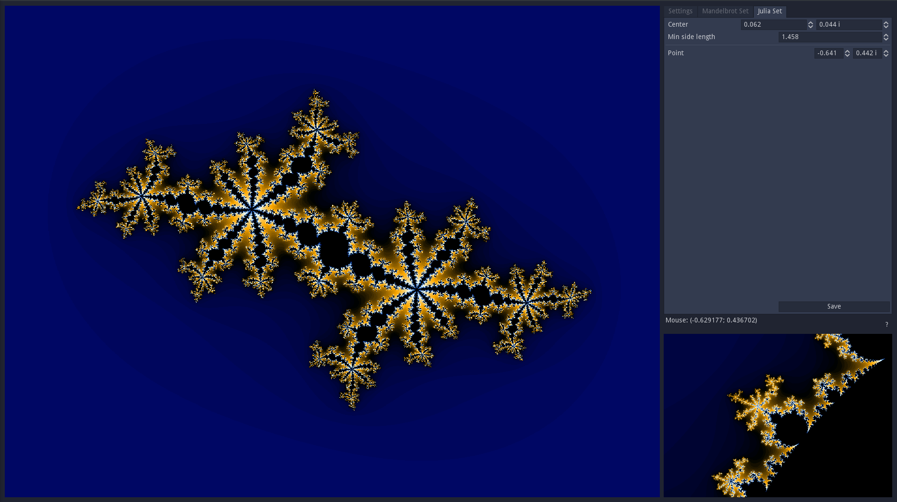

I made this visualisation of the Mandelbrot and Julia sets in highschool. You can pan with the middle mouse button and zoom in and out with the scroll wheel. It also shows some links between the Mandelbrot set and the Julia sets, as each point on the Mandelbrot set corresponds to a Julia set. You can click on the Mandelbrot visualization to see what the Julia set looks like for a specific complex point.
The source code is available on github and is under the MIT license.